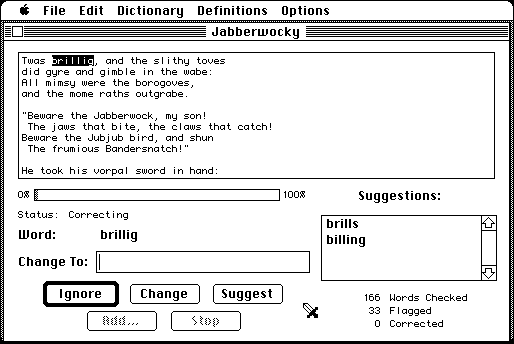

Download
Excalibur_2.6.zip (848K) Excalibur 2.6 repackaged into a zipped hfs disk image and checksum file. The disk image can be mounted with Mini vMac.
Excalibur_2.6.sit.hqx (1.2M) Excalibur 2.6 in the original format.
copyright: Medieval Ventures
mod date: Nov 5, 1998
license: free for non-commercial use
from url :
Excalibur | LaTeX Spell Checker
“Spelling checker that is also LaTeX aware”. For "System 6.0.5 or higher". By Rob Gottshall & Rick Zaccone.

If you find these downloads useful, please consider helping the Gryphel Project, which hosts them.
Here are the md5 checksums for the downloads, signed with Gryphel Key 5:
--------- GRY SIGNED TEXT --------- 0454f504420dcbec7f99c55755155038 Excalibur_2.6.zip d6453b7df05b374fa3d85fc1e1522cbd Excalibur_2.6.sit.hqx ------- BEGIN GRY SIGNATURE ------- Gry/4Xa8CFcUzxdN/Ktsfcoz+HXVgE2+Ct0h2F/ZioXUw4Sg3WZ07z/OV9PDAB+u oVGTXPiYirFTQxrKwZdbe0H9b6C7YDlrTov9VMhaY5KERLf8JsRuBaKHmjgaXOKN WK6EeNKBDbzWSHw76s789wQNXB7kqF18ldB9vLgHXm/AQX7VEI91pE9q/+chDWBF -------- END GRY SIGNATURE --------